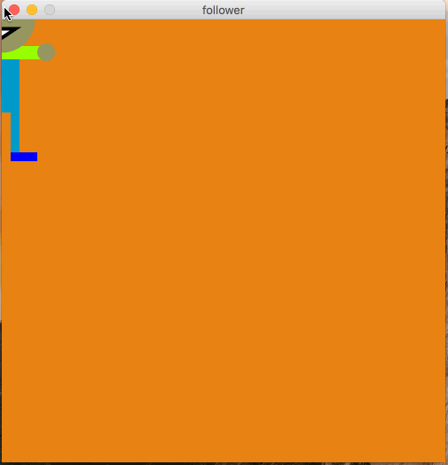

In this assignment, you will write a processing program that generates a drawing of person. This person will “follow” wherever the mouse moves along the screen. Below is an example animation of this happening in action:

The mouse should be roughly centered on the persons face.
When the mouse is moved, the person moves along with it.
You should user the mouseX and mouseY variables to determine where the mouse is.
Also, you’ll need to use the setup() and draw() function for this one.
You must use at least 5 different unique colors on the person. The exact colors are for your choosing. The background must be an orange/red, as is shown in the spec. Your canvas should be square, and large enough to give the person plenty of room to more around. The person must be at least 170 pixels tall total.
All of your programming should be well-formatted and easy for the graders to read and comprehend. You should follow the style guidelines that we have discussed in class. Each program file should have a header comment at the top that has roughly the following format:
//
// Author: Student Name
// Description:
// A short description of what this program does!
//
It is due on 2/2/2018 at 5:00pm.
Turn in each of the files described in the spec (1 total) the assignment 3 dropbox in D2L before the due date. Make sure to name the files exactly as this document specifies. In general, make sure to follow these instructions precisely.